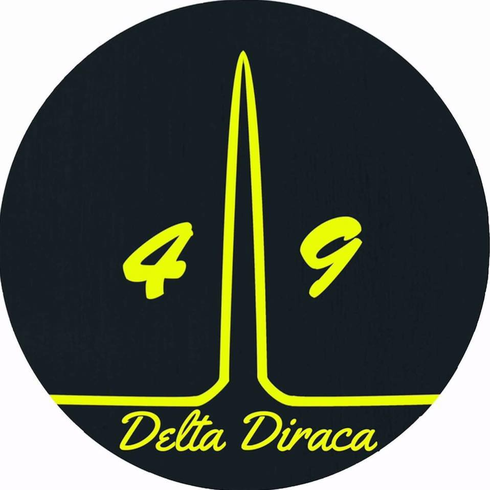
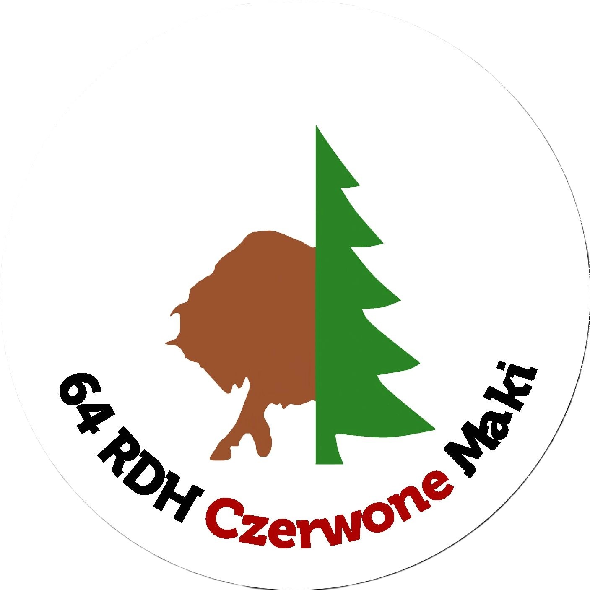

1,5% dla szczepu
Jak przekazać 1,5% dla Naszego Szczepu?
To bardzo proste!
W rozliczeniu finansowym należy podać następujące dane:
Numer KRS: 0000268913
Organizacja: Chorągiew Stołeczna ZHP
Cel szczegółowy: Hufiec ZHP Wołomin 49 DH Delta Diraca
Cel szczegółowy: Hufiec ZHP Wołomin 64 RDH Czerwone Maki
Dziękujemy wszystkim, którzy przekażą 1,5% na rzecz Naszego Szczepu ;)
Drużyny
49 Drużyna Harcerska „Delta Diraca” 
Drużynowy : Jakub MiesiącZbiórki : Spotykamy się przy kościele w Helenowie
49 DH Delta Diraca
64 Radzymińska Drużyna Harcerska „Czerwone Maki” 
Drużynowy : Kamil SiebierwskiZbiórki:
Piątki o 16.30 Szkoła Podstawowa nr 2 w Radzyminie ul. Marii Konopnickiej 24
Soboty o 10.00 Szkoła Podstawowa nr 2 w Słupnie ul.Szkolna 3
64 RDH „Czerwone Maki"
Jesteśmy 64 RDH „ Czerwone Maki. Drużyna istnieje od października 1990 roku. Obecnie działamy w kilku szkołach: w SP nr 2 w Słupnie oraz w Szkole Podstawowej nr 2 w Radzyminie. Nazwa drużyny pochodzi od pieśni czerwone maki na Monte Cassino, autorem jej słów jest Feliks Konarski a słowa te powstały w nocy z 17 na 18 maja 1944r. Z połączenia odznak rozpoznawczych dwóch polskich jednostek wchodzących w skład 2 Korpusu Polskiego powstało logo drużyny. Zielony świerk na biało-czerwonym tle był odznaką rozpoznawczą 3 Dywizji Strzelców Karpackich pod dowództwem gen. Bronisława Ducha. Żubr był odznaką 5 Kresowej Dywizji Piechoty walczącej pod dowództwem gen. Nikodema Sulika.
Harcerska akcja letnia 2024
Drodzy rodzice,
planowana w tym roku Harcerska Akcja Letnia drużyn 49 DH Delta Diraca, 64 RDH Czerwone Maki, 64 RDH Bór i 64 RDHS Parasol wypada w terminie 05-20.07.2024 r.
Obóz odbędzie się w Ośrodku Szkoleniowo-Wypoczynkowym Hufca ZHP Pabianice w Małczu. (https://malecz.zhp.pl/)
Koszt HAL to 1750 zł.
Na zgłoszenia przez wypełnienie poniższego formularza czekamy do 14.04.2024r.
Zaliczka w wysokości 550 zł jest potwierdzeniem zgłoszenia i czekamy na nią do 21 kwietnia.
Kolejne płatności rozłożone są następująco:
do 5.05: 600 zł
do 26.05: 600 zł
Dane do przelewu:
Właściciel: Hufiec ZHP Wołomin
43 1140 1010 0000 3287 7500 1025
DSCZ
W tytule przelewu MUSI znaleźć się skrót DSCZ (Dodatkowa składka członkowska zadaniowa) ze względów skarobwych, inaczej przelewy będą zwracane i będzie trzeba je wykonać jeszcze raz.
Składki
Jednym z obowiązków członkowskich w Związku Harcerstwa Polskiego jest opłacanie składek członkowskich. Od IV kwartału 2017 roku wysokość składki ustalona jest dla każdej chorągwi indywidualnie. Składkę tworzą: część należna Głównej Kwaterze ZHP – w wysokości 11 złotych kwartalnie, część należna chorągwiom, hufcom i podstawowym jednostkom organizacyjnym - kwartalnie. Kwota wynika z Uchwały nr 31/XLII Rady Naczelnej ZHP z dnia 8 listopada 2023 r. w sprawie określenia wysokości podstawowej składki członkowskiej na 2024 r., stanowi stały składnik podstawowej składki członkowskiej w każdej jednostce,
Kontakt
Chorągiew Stołeczna Związku Harcerstwa Polskiego
Hufiec Wołomin
im. hm. Mieczysława Cicheckiego
ul. Długa 34, 05-200 Wołomin
NIP: 527-252-61-38
REGON: 140786064
KRS: 0000268913
Kontakt mailowy:
wolomin@zhp.pl
Kontakt z władzami:
Komendant Hufca
phm. Szymon Chaciński
e-mail: chacinski.szymon@zhp.net.pl
Zastępca Komendanta Hufca
pwd. Tomasz Miszkurka
e-mail: tomasz.miszkurka@zhp.net.pl
Skarbniczka Hufca
pwd. Anna Kałuska
e-mail:kaluska.anna@zhp.net.pl
Dane do faktury:
Chorągiew Stołeczna ZHP
01-067 Warszawa, ul. Piaskowa 4
NIP: 527-252-61-38
Numer Rachunku Bankowego
12 1140 1010 0000 3287 7500 1001